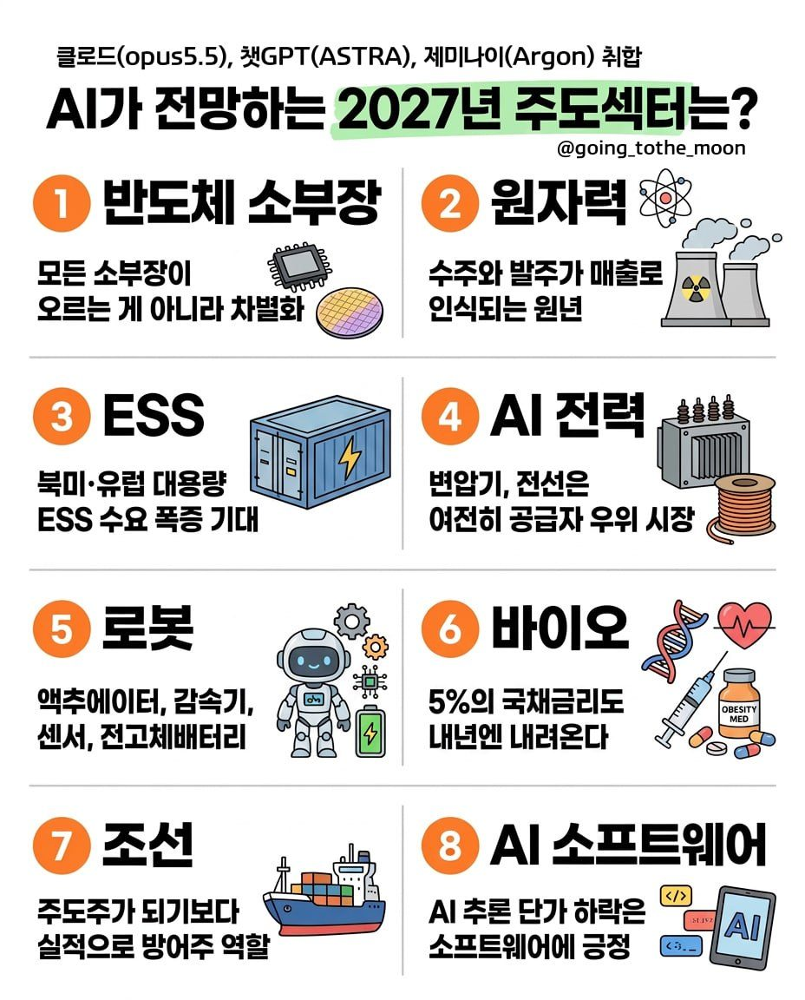

관심종목
🔭 AI 가 전망하는 2027년 주도섹터 클로드·챗GPT·제미나이 취합 (@going_tothe_moon) · 참고용


보유·관심·공동 종목의 최근 3일 실적발표 쉬운 요약 · 예상 대비 실적 · 앞으로 30일 실적발표·컨퍼런스콜 일정이에요. 종목 이름을 누르면 상세 화면.
보유·관심 종목과 관련된 산업 데이터를 날마다 쌓아서 봐요.
🗺 시장 그룹판(한국·미국 지수·업종 ETF · AI 인프라 200일선) → 🔭 차트 스캔 → 📈 주봉 정배열 · 참고용 (매수·매도 추천 아님)
같은 업종을 10년 치로 나란히 — 메모리 3사 · 낸드 · 빅테크 CapEx · 클라우드. 달러로 바꾼 숫자는 분기 평균 원/달러 환율 기준이에요.
함께 투자하는 종목이에요. 보유종목과 똑같이 적정주가·분기 실적·실적발표 요약까지 봐요. 종목은 config/stocks.yaml 의 joint 에 넣어요.
내 엑셀 '점수 체크리스트'를 종목마다 자동으로 계산했어요. 숫자로 매길 수 있는 항목은 자동, 비즈니스 모델처럼 판단이 필요한 항목은 config/checklist.yaml 에 적은 점수를 써요 (비어 있으면 빼고 100점 환산).
① 앞으로 실적(12MF)으로 본 적정주가 Bear · Base · Bull 과 지금 가격 ② 지난 10년 밴드에서 지금 위치, 두 가지로 봐요.